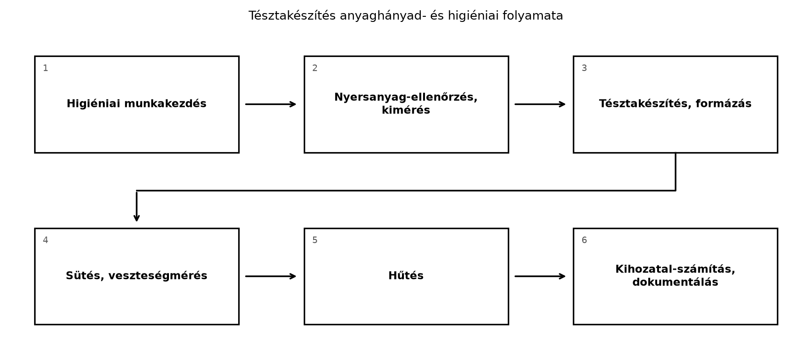

Egy cukrászműhely reggeli műszakjában a rendelés 3 db 24 cm-es piskótalap, 100 db linzerkarika és 1 tepsi leveles krémlap. Ha a tésztát „szemre” gyúrjuk, a végeredmény bizonytalan: a piskóta masszából kevesebb lesz, mint amennyit a tortaforma igényel, a linzerből megmarad fél adag, a leveles tésztából pedig nem jön ki a rendelt szeletszám. A cukrász nemcsak receptet követ, hanem a kihozatalt is tervezi: előre tudja, hogy 1 kg nyers tésztából mennyi sült termék várható. Ebben az alfejezetben a tészták anyaghányad-számítását, a sütési veszteséget és a tésztakészítés higiéniai ellenőrzőpontjait gyakoroljuk a leggyakoribb tésztatípusokon: piskóta, linzer és leveles tészta.
Képzelj el egy munkapadot, rajta két mérleggel. Az elsőre ráhelyezel 1 kg nyers linzertésztát. Kinyújtod, kiszúrod, a korongokat a másik mérlegre teszed: a nyers darabok össztömege 980 g, mert a kiszúrás porozásnál, lehulló aprónál hagyott 20 g-ot. A korongokat beteszed a sütőbe, majd kiveszed: a mérleg most 860 g-ot mutat. A különbség a sütési veszteség. Ugyanezt elvégzed piskótánál: a 630 g nyers masszából sütés után 517 g tortalap lesz. A veszteség nem hiba, hanem a tészta érésének része, de a kalkulációban mindig számolnod kell vele.

Definíció. A tészta nyers tömege (, régi szóhasználattal bruttó tömeg) a kimért nyersanyagokból összeállított, formázásra kész tészta tömege. A kisült tömeg (, nettó tömeg) a sütés utáni tömeg.
Definíció. A sütési veszteség () az a tömegkülönbség, amely a sütés során a víz elpárolgásából, a felület pirulásából és a zsiradék kiolvadásából adódik. Százalékban mindig a nyers tömeghez viszonyítjuk.
Összefüggés. A sütési veszteség és a kihozatal alapképletei – amelyeket a Veszteség- és tömegnövekedés-számítás alfejezetben már levezettünk – a következők:
Definíció. A kihozatali tényező () azt mutatja meg, hogy 1 g nyers tésztából hány g kisült termék lesz:
Ha például a sütési veszteség 15%, akkor a kihozatali tényező 0,85: 1000 g nyers tésztából 850 g sült termék várható.
Szabály. A tésztamennyiséget mindig a kisülési cél felől számoljuk. Először meghatározzuk, hány darab, mekkora tömegű sült termék kell, abból a sütési veszteséggel visszaszámoljuk a nyers tészta tömegét, majd a receptúra szorzószámával a nyersanyagok mennyiségét.
Megjegyzés. A sütési veszteség tésztafajtánként és berendezésenként eltér. Az alábbi táblázat tájékoztató, üzemi mérésekből származó értékeket tartalmaz, amelyeket a saját sütőddel mindig ellenőrizned kell.
| Tésztafajta | Szokásos sütési veszteség tartomány | Megjegyzés |
|---|---|---|
| Felvert tészták (piskóta) | 18–25% | magas tojás- és víztartalom |
| Omlós tészták (linzer) | 10–15% | vajtartalom miatt kisebb |
| Vajas/leveles tészták | 30–40% | sok víz és zsiradék párolog, kiolvad |
| Forrázott tészta | 35–45% | magas víztartalom |
(ellenőrizendő: üzemi mérések és gyártói adatlapok szerinti pontos értékek)
A gyakorlatban nemcsak tömeggel, hanem formával és darabszámmal számolunk.
Szabály. A tésztalap tömegét a felület és a vastagság szorzatából becsülheted:
ahol a forma területe, a kívánt tésztavastagság, a nyers tészta sűrűsége. A legtöbb nyers tésztát közé becsüljük. A pontos értéket mindig méréssel igazold.
Példa. Egy 30 × 40 cm-es tepsin 0,5 cm vastag linzerlapot szeretnél. A tészta becsült sűrűsége 1,05 g/cm³. A szükséges nyers tészta tömeg:
Ezután a sütési veszteséggel kiszámolod a várható kisült lap tömeget.
A képlet tényezőit az alábbi ábra szemlélteti: a forma alapterülete (; körnél , téglalapnál ) és a tésztaréteg vastagsága () adja a térfogatot, ezt szorozzuk a sűrűséggel. A HTML-kiadás kalkulátorában a forma, a méret, a vastagság és a sűrűség változtatható; az alapértékek a fenti példáé (630 g).
A sütési veszteséget mindig a nyers tömeghez viszonyítjuk, mert a sütőbe bevitt tömeg a kiindulási alap. A kihozatali tényezőt a későbbi kalkulációkhoz, például az eladási ár számításához is használjuk: ha tudod, hogy 1 adag tésztához mennyi nyers anyag kell, a veszteséggel pontosíthatod az anyagköltséget.
Kidolgozott példa. Egy adag linzertésztából 100 db,
egyenként 12 g-os nyers korongot szúrunk ki. A sütési veszteség mérése
szerint 13%.
Adott:
,
,
darabszám
.
Keresett: a sült korong tömege
és a 100 db összes sült tömege.
Képlet és behelyettesítés:
Összes sült tömeg:
.
Ellenőrzés: a korongok összes nyers tömege
,
a veszteség:
,
ami a nyers tömegre vetítve
.
∎
Definíció. A nemes hulladék a tiszta, nyers tésztadarabokból származó levágás, nyesedék, kiszúrási maradék, amely fizikailag és higiéniailag alkalmas arra, hogy visszagyúrjuk és újra felhasználjuk. Nem tartozik ide a padlóra esett, szennyezett, lejárt vagy idegen anyaggal érintkezett tészta.
Szabály. A nemes hulladékot mindig
elkülönítve, hűtve tárold, és minél hamarabb dolgozd
vissza, mert a nyers tészta tojással, tejjel vagy vajjal mikrobiálisan
érzékeny. A hűtőből kivett maradékot legfeljebb a műszakon belül
használd fel, ha a hűtési lánc megszakítatlan volt
(ellenőrizendő: hatályos higiéniai útmutató).
Szabály. A nemes hulladékot tésztafajtánként eltérően kezeld:
Tilos. A padlóra esett, láthatóan szennyezett, vérrel, nyers húslével érintkezett, valamint a lejárt vagy kellemetlen szagú tésztát visszadolgozni. Az ilyen anyagot selejtezni kell.
A tésztakészítés minden művelete a higiéniai munkakezdéssel indul. A részletes személyi higiéniát a Személyi higiénia és egészségügyi alkalmasság, az üzem kialakításának higiéniai feltételeit az A vendéglátó üzlet és a cukrászüzem kialakításának higiéniai feltételei, a nyersanyagátvétel szabályait pedig a Nyersanyagok beszerzése, átvétele, tárolása és előkészítése alfejezet tartalmazza. Itt a tésztára fókuszálunk.
Higiénia. A tésztakészítés megkezdésekor:
Jogszabály. A tésztakészítésre az általános
élelmiszer-higiéniai szabályok (852/2004/EK rendelet) vonatkoznak; a
tojásos, tejes és vajas tésztákat hűtve kell tartani, és a késztermékek
hűtési láncát biztosítani kell
(ellenőrizendő: hatályos jogszabályi hőfokok). Az
allergének jelölését a fogyasztók tájékoztatásáról szóló 1169/2011/EU
rendelet szerint kell elvégezni; a tésztákban leggyakrabban a glutén,
tojás, tej, diófélék, földimogyoró és szezám fordul elő. Az akrilamid
csökkentésére a 2017/2158/EU rendelet előírja a sütési hőmérséklet és
idő szabályozását, különösen a keményítőben gazdag tésztáknál
(ellenőrizendő: aktuális hatósági útmutató).
Biztonsági korlát. A dagasztógépet, habverőt, tésztanyújtót csak oktatás után, felügyelet mellett kezeld; működés közben tilos benyúlni, és a védőburkolatot tilos kiiktatni. Tisztítás előtt áramtalanítsd a gépet, és várd meg, amíg a forgórész leáll. A forró tepsi, sütőajtó és gőz súlyos égési sérülést okozhat.
Kritikus pont. A tojásos, tejes, vajas tészták a
készítés és a sütés között gyorsan romolhatnak. A tésztát a munkapadon
csak annyi ideig tartsd szobahőmérsékleten, amennyi a művelethez
szükséges; a maradékot azonnal tedd hűtőbe. A sütés hőkezelés, ezért a
kész tésztatermék mikrobiológiai kockázata kisebb, de a sütőből kikerült
terméket tiszta, elkülönített területen kell hűteni, és a hűtési időt
dokumentálni (ellenőrizendő: hatályos HACCP-útmutató).
A következő ellenőrzőlista a tésztakészítés higiéniai és számítási lépéseit foglalja össze, és a gyakorlati munkához is használható. A lista a terméktől független, minden tésztára alkalmazható.
Technológiai lap. Tésztakészítés ellenőrzőlistája
Tanulási recept (nem eredeti receptúra): 1 db 24 cm-es tortalaphoz.
| Nyersanyag | Mennyiség (g) | Megjegyzés |
|---|---|---|
| Tojás (egész) | 300 | kb. 6 db közepes (ellenőrizendő: tömegosztály) |
| Kristálycukor | 150 | |
| Búzaliszt (finom, ~9–10% sikér) | 180 | |
| Összes nyers massza | 630 |
A piskóta sütési vesztesége a gyakorlatban 18–25%
(ellenőrizendő: üzemi mérések). Számoljunk 20%-kal.
Adott:
,
.
Keresett: a kisült tortalap tömege, és egy szelet
átlagos tömege, ha 8 szeletre vágjuk.
Képlet és behelyettesítés:
Egy szelet tömege:
.
Ellenőrzés: a veszteség
,
ami a nyers tömegre vetítve
pontosan. ∎
Tanulási recept (nem eredeti receptúra): sárga linzer, 1 kg liszthez.
| Nyersanyag | Mennyiség (g) | Megjegyzés |
|---|---|---|
| Búzaliszt (finom, ~9% sikér) | 1000 | hideg |
| Vaj (zsírtart. 80%) | 500 | hideg |
| Porcukor | 250 | |
| Tojássárgája | 40 | kb. 2 db |
| Só | 2 | |
| Citromhéj | 1 | reszelt |
| Összes nyers tészta | 1793 |
A linzer sütési vesztesége jellemzően 10–15%
(ellenőrizendő: üzemi mérések). Legyen 12%.
Első számítás: Az 1 kg lisztes receptből hány db 12 g-os nyers linzerkorong szúrható ki, és mennyi lesz a sült tömege?
Nyers tészta: . Nyers korong tömeg: . Kiszúrható darab:
A 0,4 db-nyi maradékot nemes hulladékként hasznosíthatod. Sütési veszteség 12%, egy db sült tömege:
Összes sült tömeg:
.
Ellenőrzés: nyers össztömeg
,
veszteség
,
ami
,
kerekítésből adódó eltéréssel. ∎
Második számítás: Hány g nyers tésztát kell kimérni, ha 40 db 12 g-os nyers korongot szeretnél?
Első lépés: a 40 db nyers korong tömege . Mivel a kiszúrási hulladékot visszagyúrhatod, a kimért tésztamennyiség 480 g, de a gyakorlatban számolj 2–3% ráhagyást a porozás, apró veszteség miatt: . A sült termék tömegét a 480 g nyers korongból számoljuk: . A kerekítés miatt az egyes daraboknál 10–11 g között ingadozhat.
Tanulási recept (nem eredeti receptúra): vajas/leveles tészta 1 kg liszthez.
| Nyersanyag | Mennyiség (g) | Megjegyzés |
|---|---|---|
| Búzaliszt (magas sikértart.) | 1000 | hideg |
| Víz | 550 | hideg, kb. 4 °C |
| Só | 20 | |
| Vaj a tésztába | 100 | hideg |
| Vaj a hajtogatáshoz | 500 | hideg, formázott lap |
| Összes nyers tészta | 2170 |
A leveles tészta sütési vesztesége 30–40%
(ellenőrizendő: üzemi mérések). Számoljunk 35%-kal.
Számítás: A recept szerinti 2170 g nyers tésztából mennyi sült leveles lap lesz?
Ha ebből a kész lapból 60 g-os adagokat vágsz, a darabszám:
Ellenőrzés: 23 db × 60 g = 1380 g sült termék, a maradék 30 g a szeletelési hulladék. A sütési veszteség a nyers tömegre vetítve . ∎
Fordított irányú számítás: Ha 12 db 60 g-os leveles pogácsát szeretnél, mennyi liszt szükséges?
Keresett kisült tömeg:
.
Szükséges nyers tészta:
.
A recept 2170 g nyers tésztát ad 1000 g lisztből. A szorzószám:
.
Liszt:
.
Többi anyag ugyanezzel a
-val
számolható: vaj a tésztába
,
hajtogató vaj
,
víz
,
só
.
∎
A tésztatermékek minőségét sütés után, lehűlés előtt és részben lehűlt állapotban is ellenőrizni kell.
Tünet: a piskóta sülve lényegesen kisebb tömegű
a tervezettnél, a tortalap vékony.
Ok: a sütési veszteséget alábecsülték, vagy a masszát
túl magas hőfokon sütötték, és a felület idő előtt megkötött.
Megelőzés: ellenőrzött veszteség-százalékot használj, a
sütő hőfokát rendszeresen kalibráld.
Tünet: a linzerkorongok kemények, összemenők, a
szélük túl sötét.
Ok: a nemes hulladékot többször visszagyúrták, a sikér
megerősödött, a vaj megolvadt; a sütő hőfoka túl magas.
Megelőzés: a nyesedéket hidegen tartva, minimális
mozdulattal gyúrd vissza; sütés előtt pihentesd; használj 160–170 °C
közötti sütőhőt (ellenőrizendő: berendezésfüggő).
Tünet: a leveles tészta lapos, zsiradék folyik
ki a tepsibe.
Ok: a tésztát melegen nyújtották, a hajtogatás közben
nem pihentették, vagy a sütő hőfoka túl alacsony.
Megelőzés: a tészta és a hajtogatózsiradék hőmérséklete
kb. 12–16 °C legyen, egymáshoz közel, a zsiradék ne olvadjon meg
(ellenőrizendő: zsiradék gyártói adatlapja); a sütőt
200–220 °C-ra melegítsd elő
(ellenőrizendő: üzemi gyakorlat).
Tünet: a kész tésztatermék a második napon
savanykás szagú, a felülete nedves.
Ok: a sütés után a terméket melegen, zárt dobozba
tették, vagy a hűtés nem volt elég gyors.
Megelőzés: a tésztát rácson, jól szellőző helyen hűtsd
le, majd tiszta, elkülönített helyen tárold; a nedves tésztaterméket
hűtve tartsd.
Eset. Egy cukrászda vasárnap reggel 40 db linzerkarikát és 1 db 24 cm-es piskótalapot süt. A rendelés délelőtt 10 órára szól. A cukrász a 40 db 12 g-os korongra a kisülési célból számol vissza: nyers tésztát tervez (3% ráhagyással), így a szorzószám , tehát kb. 276 g lisztből (138 g vaj, 69 g porcukor, 11 g tojássárgája) gyúrja be a linzert. A piskótához 6 tojást, 150 g cukrot és 180 g lisztet használ. A tésztakészítés előtt a higiéniai ellenőrzőlistát végigfuttatja: kezet mos, a gépet ellenőrzi, a hűtőből kiveszi a vajat és a tojást. Sütés közben megméri a piskóta tömegét: a 630 g-os masszából 505 g sült lap lesz, a veszteség 19,8%, a tervezett 20%-hoz közel. A linzer 40 db sült korongja összesen kb. 418 g ( 13%-os veszteséggel), ami a tervhez jól illeszkedik. A megmaradt kevés linzer-nyesedéket hűtőbe teszi, és másnap felhasználja. (Ha 1 kg lisztből gyúrt volna, kb. 1,3 kg tészta maradna felesleges nyesedékként; éppen ezt a tervezési hibát kerüli el a visszaszámolás.) A naplóba beírja a sütési hőfokot, a tömegadatokat és a hűtési időt. A rendelés időben elkészül, a tömegellenőrzés megfelelő, a maradék tészta nem romlik meg.
1. feladat (A). Az 1 kg lisztből készült linzertészta nyers tömege 1793 g. A sütési veszteség 12%. Mennyi lesz a kisült tészta tömege?
2. feladat (A). Mi a kihozatali tényező, ha a sütési veszteség 20%? Mennyi sült piskóta lesz 800 g nyers masszából?
3. feladat (B). A 24 cm-es piskóta receptje: 300 g tojás, 150 g cukor, 180 g liszt. A sütési veszteség 20%. Mekkora lesz a sült tortalap tömege, és hány 60 g-os szeletet vághatsz belőle?
4. feladat (B). 30 db 15 g-os nyers leveles pogácsát szeretnél. A sütési veszteség 35%. A leveles tészta receptje 1 kg lisztre: 1000 g liszt, 550 g víz, 20 g só, 100 g vaj a tésztába, 500 g vaj a hajtogatáshoz. Mennyi lisztre van szükséged, és mennyi lesz a sült pogácsák össztömege?
5. feladat (C). A linzerkorongok sütés után kemények és összemenők lettek. A tésztát egyszer gyúrták, de a nyesedéket négyszer visszagyúrták, és a sütő hőfoka 220 °C volt. Elemezd a hibát, és javasolj megelőzést.
6. feladat (D). Készíts el 1 adag sárga linzert a fenti tanulási recept alapján. Mérd meg a nyers tészta, a kiszúrt korongok, a sütés utáni korongok tömegét. Számold ki a tényleges sütési veszteséget, és töltsd ki a tésztakészítési naplót (dátum, anyagok, hőmérséklet, tömegek, veszteség).
1. feladat (A).
Adott:
,
.
Kiszámítjuk:
.
Válasz: 1578 g sült linzer.
2. feladat (A).
Kihozatali tényező:
.
Sült piskóta 800 g nyersből:
.
Válasz: 0,80 kihozatali tényező; 640 g sült
piskóta.
3. feladat (B).
Adott: nyers tömeg
,
veszteség 20%.
Sült tömeg:
.
Szeletszám 60 g-os adagokkal:
db 60 g-os szelet.
Válasz: 504 g sült lap, 8 db 60 g-os szelet.
4. feladat (B).
Adott: 30 db × 15 g = 450 g nyers pogácsa; sütési veszteség 35%, tehát
sült tömeg:
.
A recept szerint a teljes nyers tészta 2170 g 1000 g lisztből. Szükséges
nyers tészta (450 g): a liszt aránya a tésztán belül:
.
Szükséges liszt:
.
Válasz: körülbelül 207 g liszt, 293 g sült pogácsa.
5. feladat (C).
A hiba oka a többszöri visszagyúrás: a sikérháló túl erőssé vált, a vaj
megolvadt, a tészta veszített zsiradéktartalmából. A 220 °C túl magas, a
felület gyorsan pirul, a belseje nem tud lazulni.
Megelőzés: a nyesedéket egyszer gyúrd vissza, hűtőben pihentesd, és a
linzert 160–170 °C-on süsd
(ellenőrizendő: berendezésfüggő). Ha a tészta már többször
visszagyúrt, használd morzsalapnak, ne készíts belőle kényes formájú
süteményt.
6. feladat (D).
A gyakorlati feladat értékelése: a mérési jegyzőkönyv pontos, a
tényleges veszteség 10–15% közé esik, a higiéniai ellenőrzőlista
kitöltött, a napló tartalmazza a hőmérsékletet és az időt. Várt
eredmény: a mért veszteség 12% körül mozog; ha eltér, indokold (pl. sütő
hőfoka, visszagyúrás mértéke).
A tésztakészítés anyaghányad-számításának magja a sütési veszteség és a kihozatali tényező. A sütési veszteség a nyers és a kisült tömeg különbsége a nyers tömeg százalékában. A kihozatali tényező ; ezzel számolunk a késztermék tömegéből a szükséges nyers tésztára: . A tésztamennyiséget adott formára a felület, vastagság és a tészta sűrűségének becsléséből is meghatározhatjuk. A nemes hulladékot tiszta, hűtött állapotban, tésztafajtánként eltérően hasznosítjuk: az omlós tésztát óvatosan újragyúrjuk, a leveles tésztát nem hajtogatjuk újra, a piskótamorzsa krémes töltelékhez való. A tésztakészítés higiéniája magában foglalja a munkakezdést, a nyersanyag-ellenőrzést, az allergének elkülönítését, a kritikus hőmérsékletek betartását és a gépek biztonságos használatát. Továbbvitt eredmény. Ezt a kihozatalszámítást használjuk az Uzsonnasütemények anyaghányad-számítása és technológiai lapja alfejezetben, ahol egész tálca uzsonnasüteményeket kalkulálunk.
Az alfejezet a cukrásztechnológiai alapfolyamatokra épül: sütési veszteség, kihozatal, nemes hulladék, higiéniai előírások. Hivatkozott jogszabályok: 852/2004/EK rendelet (élelmiszer-higiénia), 1169/2011/EU (fogyasztók tájékoztatása, allergének), 2017/2158/EU (akrilamid-csökkentés), 1993. évi XCIII. törvény (munkavédelem). Ellenőrizendő: a sütési veszteség pontos százalékai tésztafajtánként, a sütési hőfok- és időtáblázat, a hűtési paraméterek, a tojás tömegosztálya, a nemes hulladék hűtési idejének hatályos útmutatója, a gépek biztonságára vonatkozó pontos előírások és a NÉBIH jó higiéniai gyakorlat útmutatói. A tanulási receptek nem eredeti hagyományőrző receptek, hanem a szakmában elterjedt, szemléltető arányok.